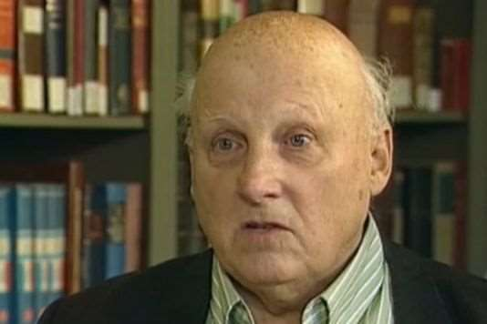

J’ai retrouvé ce texte du cher Père Bernard Dupuy, qui nous a quittés en 2014. Seul un véritable ami du peuple juif a pur composer un tel texte, empreint d’émotion et de sincérité, et si juste théologiquement. La pérennité de son rayonnement spirituel illustre la vérité de cette parole angélique, que rapporte le Livre de l’Apocalypse (14, 13): « Heureux les morts qui meurent dans le Seigneur; dès maintenant - oui, dit l'Esprit - qu'ils se reposent de leurs fatigues, car leurs œuvres les accompagnent ». Quant à ceux qui ont collaboré à ce crime, ou se sont tus prudemment, l’oracle d’Isaïe les atteint: « Quand vous étendez les mains, je détourne les yeux; vous avez beau multiplier les prières, moi je n'écoute pas. Vos mains sont pleines de sang… » (Is 1, 15). Heureusement, la tradition rabbinique exorcise cette sanction divine terrible, en adressant à ceux qui ont pris conscience de leur culpabilité ou de leur coresponsabilité dans ce forfait, et s’en repentent sincèrement, ces paroles de consolation: « Même si les portes de la prière sont fermées, celles des larmes restent ouvertes » 1 (Menahem R. Macina).
Chrétiens, nous ne sommes pas venus à Auschwitz-Birkenau de notre propre initiative. C’est la main de nos frères Juifs qui nous y a guidés. En cette heure où nous prenons part, avec eux, à la prière des morts, nous devons d’abord nous souvenir.
La mort qui s’est étendue en ces lieux nous impose le silence. Quelle parole pourrions-nous prononcer qui soit à la mesure de la souffrance Juive? Ici, des Juifs, et eux seuls, ont morts sans autre raison véritable que leur appartenance au peuple Juif. Les nazis n’ont pas voulu seulement le rayer de l’histoire, ils ont voulu annuler sa vocation, salir sa dignité, déraciner la foi au D.ieu Unique dont il n’a jamais cessé d’être le témoin au milieu des nations.
L’homme tout entier, façonné par D.ieu, « à son image et selon sa ressemblance » (Gn 1, 26), a été nié en eux. Et comment ne pas évoquer alors toutes les souffrances, toutes les victimes, tous les morts des lieux d’extermination? Le crime a été si grand et demeure si incommensurable, que l’image de D.ieu en a été blessée dans la conscience de beaucoup d’hommes. Souvenons-nous. Le crime a été réalisé dans une Europe fertilisée par la foi chrétienne. Disciples de Jésus, il ne nous est pas possible maintenant de nous tourner vers l’Eternel et de Le bénir si nous ne sommes pas d’abord réconciliés avec nos frères Juifs. « Quand tu vas présenter ton offrande à l’autel, si là tu te souviens que ton frère a quelque chose contre toi, laisse-là ton offrande et va d’abord te réconcilier avec ton frère » (Mt 5, 23-24). Pour avoir le droit de prier à Auschwitz, il nous faut confesser la trop faible et trop lente prise de conscience chrétienne devant la perversité nazie, et devant le danger mortel qui s’abattait alors sur les Juifs. Il ne suffit pas de condamner l’action des bourreaux. Notre repentance n’est pas un réflexe de culpabilité morbide. Nous ne pouvons pas récuser la part de responsabilité chrétienne dans l’histoire qui a abouti à la Shoah. Nous devons essayer de prendre la mesure de notre péché tel que l’histoire nous le révèle. Selon notre foi, Jésus nous a introduits dans l’Alliance d’Abraham. Mais nous, nous avons dépouillé le Peuple juif des biens qui lui appartenaient en propre: « l’adoption, le culte, les promesses » (Rm 9,4). Plus tard, contrairement à ce que disent les Ecritures, nous avons osé penser que D.ieu pouvait n’être pas fidèle à Son Alliance, qu’Il avait rejeté Son Peuple. L’ayant ainsi détaché du lien qui l’unit à D.ieu, nous l’avons chargé du péché par excellence, allant même jusqu’à prononcer contre lui l’expression sacrilège de « peuple déïcide ». Nous l’avons environné de mépris et de haine. L’accusant d’aveuglement, nous avons voulu le faire chrétien, y compris par la force et en violant sa conscience.
Nous avons désobéi au commandement qui nous oblige à reconnaître dans notre frère Juif, notre prochain. Nous avons ainsi troublé et perverti des consciences humaines à son endroit. Ce jugement sur le Peuple juif, transmis de siècle en siècle, les multiples discriminations qui en ont résulté, en dépit de l’attitude de refus d’hommes exceptionnels, ont ouvert la voie à l’antisémitisme moderne, raciste.
Oui, notre responsabilité est immense. A-t-il fallu un tel abîme pour réveiller notre conscience? Nous qui venons d’être associés à la prière Juive à Auschwitz, nous prenons solennellement l’engagement d’être vigilants dans un monde qui est loin d’être guéri de tous ces maux. Nous promettons de combattre de toutes nos forces pour que justice soit rendue au Peuple Juif, et (que la) vérité (le concernant soit établie).2Nous crions vers Toi, Seigneur, et nous implorons Ta miséricorde, car nous avons appris que, si « les portes de la prière sont tantôt ouvertes, tantôt fermées, la porte de la repentance n’est jamais fermée ».
Auschwitz. 21 septembre 1986 Mis en ligne après corrections, sur le site Academia.edu, le 3 février 2019
[1] Le Talmud enseigne: « Rabbi Elazar dit: Depuis le jour où le Temple de Jérusalem fut détruit, les portes des prières ont été fermées, comme il est écrit: “Même si-je crie et appelle au secours, Il ferme tout accès à ma prière » (Lm 3, 8). Mais bien que les portes des prières soient fermées, les portes de larmes restent ouvertes, comme il est écrit: “Ecoute ma prière, Eternel, prête l’oreille à mes cris, ne reste pas silencieux devant mes larmes" » (TB Berakhot 32b; Babba Metsia 59a). Voir, en ligne, « Les portes des larmes ».
2. Note de Menahem Macina « même si les portes de la prière ont été fermées, celles des larmes ne le sont pas » (Talmud de Babylone, Traités Baba Metsia, 59, et Berakhot, 32). « Les ajouts entre crochets sont miens, il s’agit de corrections qui m’ont paru nécessaires. Menahem Macina).